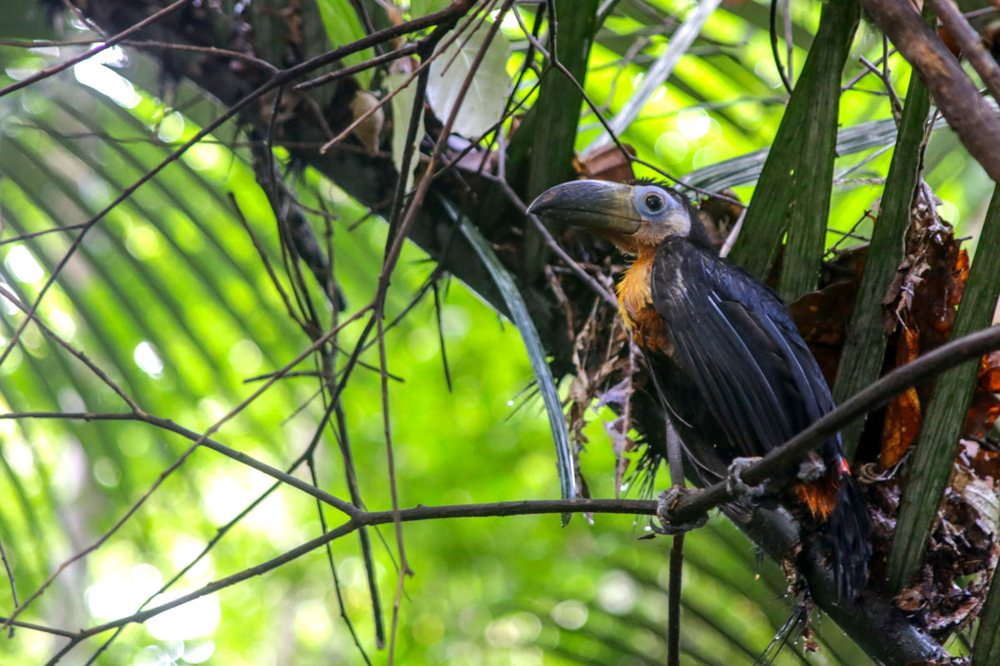
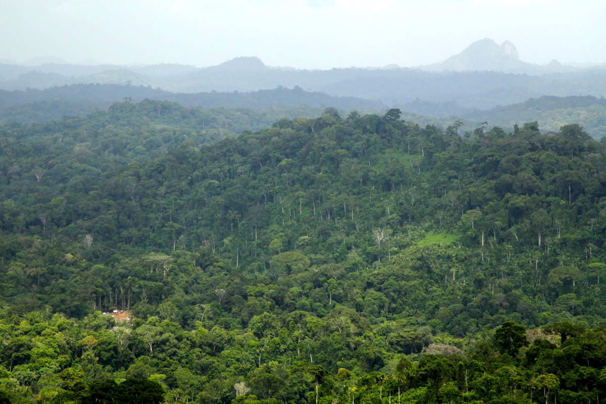
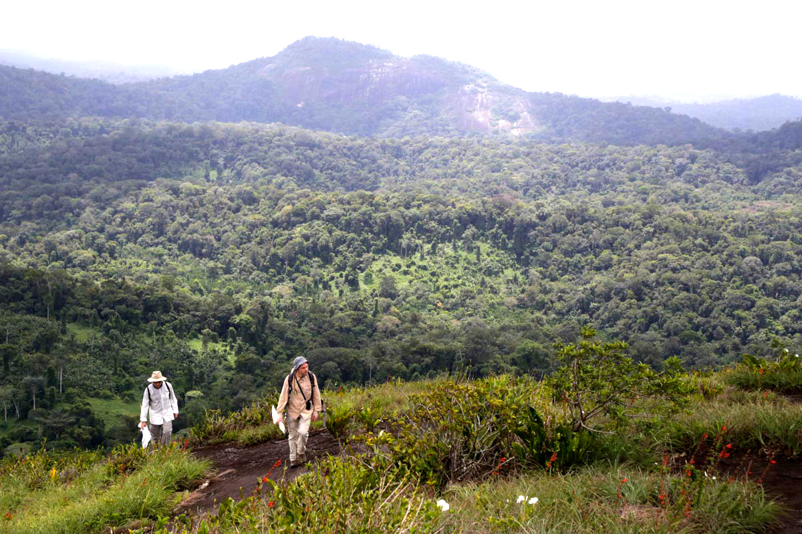
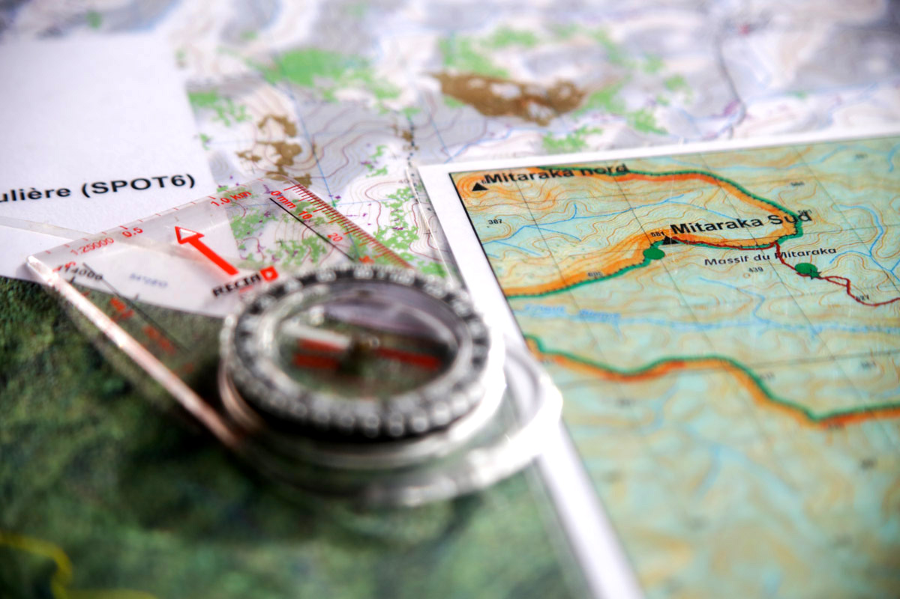
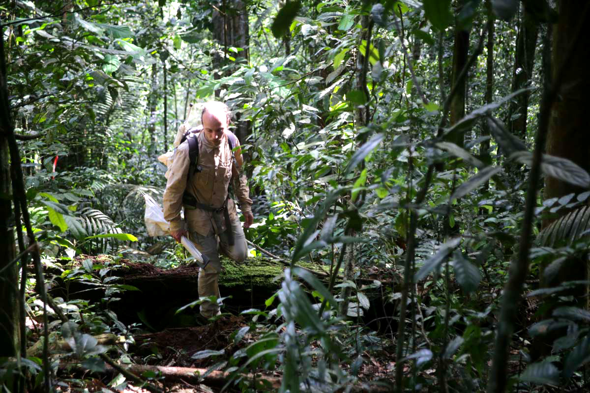

Tumuc-Humac. Un nom mythique qui a attiré comme un aimant les explorateurs du XIXe siècle, cherchant jusqu’à leur mort cette chaîne montagneuse censée marquer la frontière avec le Brésil. Berceau des légendes les plus folles, de l’Eldorado aux tribus amérindiennes oubliées de tous, le mythe des Tumuc-Humac n’a été démonté que récemment : ces montagnes n’ont jamais existé, à part dans l’imaginaire fertile des explorateurs. Le nom, lui, est resté. Sa fascination aussi.
L’origine du mythe des Tumuc-Humac est simple, prenant ses racines quelques siècles plus tôt, à une époque où une frontière entre deux pays découlait forcément d’une frontière naturelle, fleuve ou montagne. Pour la Guyane, le fleuve Maroni délimitait la bordure Ouest, l’Oyapock la frontière Est, mais quid du Sud ? Cette ligne, en réalité la ligne de partage des eaux (les rivières coulent vers le nord du côté guyanais, vers le sud côté brésilien), devait bien se matérialiser sous la forme d’une haute chaîne de montagnes. Une hypothèse qui ne pouvait être confirmée ou infirmée que par l’exploration de cette zone encore inconnue car loin des voies d’eau navigables. Pour beaucoup, ces mystérieux monts Tumuc-Humac au nom exotique devaient forcément être le théâtre des trésors cachés de l’Amazonie : le fleuve Eldorado, la Manoa, ville oubliée de tous aux toits dorés, Parimé, le lac rempli d’or... Des légendes qui trouvent toutes, à un moment ou à un autre de leur histoire et selon le narrateur, leur localisation dans les Tumuc-Humac.
Le nom même de cette chaîne fantasmée est un mystère à part entière. Fin XIXe, l’érudit Gabriel Marcel1 se noie déjà dans une montagne de cartes et de récits d’expédition pour trouver l’origine de ce nom aux sonorités étranges, inconnu de toutes les tribus amérindiennes locales. Il remonte jusqu’à une expédition espagnole datant de 1758, la première à signaler sur une carte un certain mont Tumunucuraque. Problème, ce sommet est situé sur le territoire de l’actuel Venezuela… Pour Jean Hurault, grand géographe de la Guyane, le mythe des Tumuc-Humac viendrait ainsi d’une simple erreur : « Ce mot écrit sur des cartes à très petite échelle s'étendait jusqu'à la Guyane française, et on finit par croire qu'il existait une chaîne bordant au sud les trois Guyanes, dont c'était là le nom », écrit-il.
-

Parmi la faune riche qui entoure notre camp aux Tumuc-Humac, un jeune toucan Ariel tombé de son nid.
-

En bas à gauche, la minuscule tâche orange est la zone de pose d’hélicoptère de notre camp, au cœur du grand Sud Guyanais.
C’est l’explorateur Jules Crevaux qui popularise alors le mythe à la fin du XIXe siècle, cherchant toute sa vie à gravir ces fameux monts Tumuc-Humac. « J'arriverai au sommet d'une chaîne de montagnes que nul n'a traversée avant moi », s’enthousiasme-t-il en 1879. « Il faut que j'atteigne ce but, dussé-je succomber en y arrivant. » Il y mourra trois ans plus tard, tué (puis mangé, selon la légende) par une tribu amérindienne, après avoir escaladé de nombreux inselbergs de la région en espérant y apercevoir les hauts sommets recherchés, inondant la métropole de cartes de la Guyane indiquant une haute chaîne de montagnes : les Tumuc-Humac.
C’est un autre grand nom de l’exploration de la Guyane, Henri Coudreau, qui fera perdurer le rêve de Crevaux quelques années plus tard. Passionné par les récits de son contemporain, Coudreau passera lui aussi sa vie à explorer les Tumuc-Humac et ses montagnes imaginaires, muni d’une boussole, d’un podomètre et des cartes de Crevaux. A la fin des années 1880, l’explorateur français tente de cartographier la région en rejoignant la source de l’Oyapock depuis la source du Maroni. Un parcours de près de 150 kilomètres qu’il ne réalisera jamais en entier, contrairement à ses dires, se persuadant de parcourir de hauts sommets. Ses dessins rendent menaçantes et somptueuses de simples collines, ses notes grandissent les sommets de plusieurs centaines de mètres, ses récits relient deux inselbergs isolés pour en faire une chaîne imposante…
« Coudreau meubla de chaînes et de massifs imaginaires le sud de la Guyane. On peut dire qu'il donna corps à la légende, estime Jean Hurault en 1973. Sa carte des Tumuc Humac […] montrait à ses contemporains la configuration détaillée de la fameuse chaîne, dont nul ne devait plus mettre en doute l'existence jusqu'au moment où le survol aérien de l'extrême sud montra que la région était aussi peu accidentée que le reste de la Guyane. »
-

Loins d’être de hautes montagnes, les inselbergs qui nous entourent n’en sont pas moins majestueux.
-

Loin des sentiers habituellement empruntés, cartes et boussole sont indispensables pour se déplacer en forêt.
Accidenté, le sud de la Guyane ne l’est en réalité qu’à l’extrême sud-ouest, dans le massif du Mitaraka où nous nous trouvons. En l’hélicoptère, ou depuis le sommet d’un inselberg voisin, le panorama s’avère particulièrement vallonné, dans une forêt de dômes arrondis laissant échapper par endroits une masse granitique culminant à 500 ou 600 mètres. Pas de hautes montagnes ici donc. Pourtant, alors que ce mythe des monts Tumuc-Humac a été démonté il y a plus d’un demi-siècle, de petites expéditions amateurs continuent de s’aventurer sur les traces de Coudreau ou de Crevaux : la fascination pour ce lieu est restée intacte.
En 1973, Jean Hurault terminait son article « Une chaîne de montagnes imaginaires : les Tumuc-Humac », qui consistait à démystifier le lieu, par ces mots : « Il serait hautement désirable d'effacer toute trace de l'imposture de Coudreau, en supprimant le toponyme “Tumuc-Humac“ […] de la carte du monde. » Force est de constater, trente ans plus tard, que les monts Tumuc-Humac sont encore présents sur la plupart des cartes et dans la bouche de bon nombre d’amateurs d’aventures dans des régions légendaires. Sans doute issu d’une erreur de lecture sur une carte du XVIIIe siècle, rendu presque réel par l’imagination exaltée de quelques explorateurs, le mythe des Tumuc-Humac a traversé les âges. Curieuse impression d’écrire ces lignes depuis un lieu qui n’existe pas.
Yann Chavance
-

Le camp de l’expédition est situé au cœur d’une forêt dense et inhabitée par l’Homme.